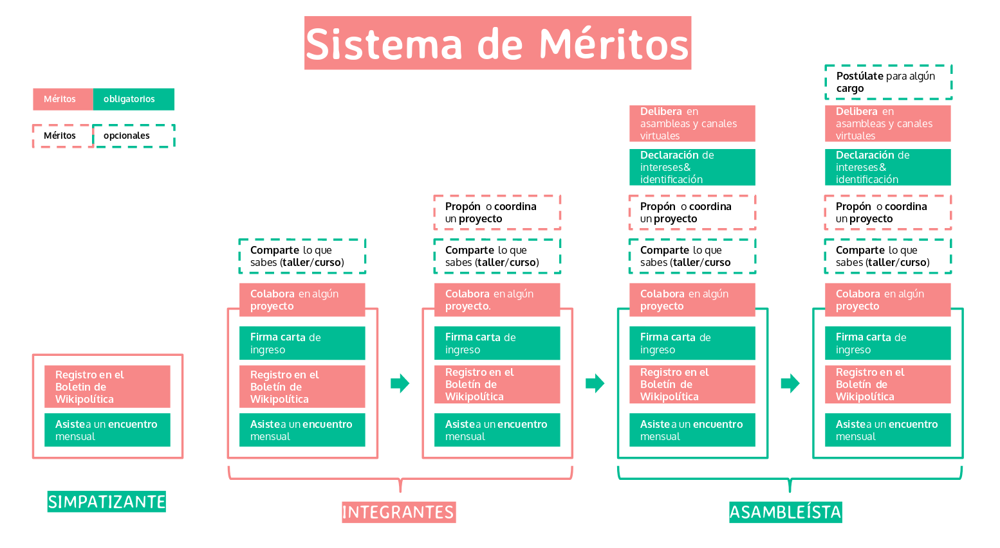

CÓMO PARTICIPAR EN
WIKIPOLÍTICA JALISCO
Después de transitar por distintos modelos de asambleas, comisiones y juntas periódicas, nos hemos convencido de que la mejor forma de hacer Wikipolítica es de manera abierta. Cualquier persona puede participar e involucrarse en el trabajo y toma de decisiones hasta donde su compromiso y los principios que compartimos lo permitan.
Todas las personas que estamos aquí somos wikis. Por eso son tan importantes las temperaturas de participación, que nos permiten organizarnos y actuar como una red, fundamentada en reconocernos y reconocer la diversidad de voluntades que forman esta generosa comunidad en lo virtual y presencial.
Nos vemos una vez al mes en los Encuentros Mensuales de la comunidad, colaboramos en proyectos y nos mantenemos en comunicación por canales virtuales, donde podemos aprender y convivir mientras hacemos política entre personas comunes.
El primer paso para participar es asistir a alguno de los Encuentros Mensuales*. En ellos podrás registrarte como wiki, impartir un taller o unirte a algúna de las mesas de trabajo.
* La invitación es siempre abierta y anunciada en nuestras redes sociales.
¿Cómo Discutimos?
En Wikipolítica privilegiamos el diálogo donde pueden escucharse todas las voces. Creemos que la deliberación colectiva vale la pena, aunque reconocemos la complejidad de llevarse de manera sostenible entre muchas personas.
Es por esto que buscamos constantemente innovar en la forma en la que discutimos y tomamos decisiones. Esto nos ha permitido reconocer prácticas deseables para cada tipo de espacio de discusión, ya sea presencial o virtual.
Partimos de ser excelentes en todo momento, eso implica el respeto al tiempo y opinión de otras personas, saber complementar o refutar las ideas sin olvidar que hay una persona con un contexto y motivaciones válidas detrás. Asumimos buena fe y colaboramos sin dejar de nutrir nuestro sentido crítico colectivamente.
Para decisiones trascendentales de la organización, como la votación de cargos y de asuntos de la estrategia general de Wikipolítica Jalisco, se deben sumar los méritos suficientes para acceder al derecho al voto, el cual se ejerce en Asambleas Semestrales y en canales virtuales.
